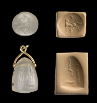
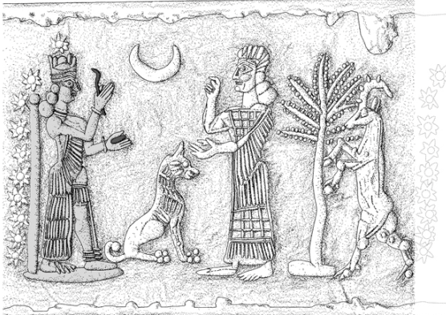

Reconstructing historical periods with the evidence that exists today is certainly difficult. Evidence regarding men was generally more plentiful, allowing historians to piece together a more complete story about the role of men in society as compared to women. Rather than explaining the gender gap, oftentimes historians neglect the female perspective. In Ancient Mesopotamian studies, there is evidence including cylinder seals, poetry, and written tablets with female characters and subjects. In this blog, I intend to use some of this evidence to compare the woman as the healer and the woman being healed. I open this blog with a disclaimer, unfortunately as historians, we can only go as far as the sources take us. Although evidence exists, we cannot always answer the why? question.
The Healing Goddess Gula
I am the physician, I know how to heal.
I take along all healing plants, I expel disease.
I am girded with a bag containing life-giving incantations.
I carry scalpel for curing.
I am giving medication to people.
The pure bandage soothes the skin sore.
The soft poultice eases the sickness.
My very glance at the moribund revives him,
My mere words make the weak stand up.
I am merciful; even from afar I am listening,
I bring back the moribund from the netherworld.
I am girded with a leather bag, I …
I am watching over the enfeebled, I examine the sick, I open the skin sore.
I am the Lady of Life:
I am the physician, I am the seeress, and I am the exorcist.
In these lines from the
Gula Hymn of Bullussa-rabi, we are introduced to Gula, the healing Goddess. In these lines, Gula is characterized as a physician who cares for the ill. Gula is characterized as a practical physician in these lines. She is a physician who encompasses the practices of magical incantations, medicinal plants, and diagnosis to heal. Her role as a healer seems analogous to healers of the modern era. Gula has the tools and knowledge to sooth and heal the afflicted (Böck).

A Neo-Assyrian stamp seal depicting the goddess Gula sitting on a throne that rests on a dog.
In the seal above, Gula is portrayed sitting on a throne indicating her reverence and importance to society. She is depicted as a queen. Although it is presumed that many of the technical skills in Ancient Mesopotamian medical practices were passed along via an oral tradition, texts and seals such as these provide a tangible form of evidence. Furthermore, little has been written about the belief system of the Ancient Mesopotamian healing. In this case, it is difficult to assume the sentiments and personal beliefs that individuals felt. This is interesting given the fact that Gula is a divine being. Originally, multiple healing Goddesses existed. But between the second and third millennia BC, the Goddesses merged into the all-encompassing Gula. (Steinkeller)
It’s easy to take the fact that Gula is a woman for granted. In today’s society, it doesn’t seem out of the ordinary at all. A question I set to answer at the beginning of this blog is why is Gula’s womanhood significant? Unfortunately, given the limitations of the evidence, the question is still difficult to answer. Because Goddesses were less common than Gods, Gula’s status as a woman was unique. Another interesting trend I noticed while reading, is the fact that the vast majority of the healers were males. We have examples of midwives and wet nurses who had roles in the birthing and child-rearing processes, yet the physicians, the asû and asipû were male, as far as the evidence shows (Stol). Therefore, male physicians learned healing techniques from a female Gula. This poses an interesting dichotomy regarding gender roles. In this scenario, it is the woman who is wise and omnipotent whereas in traditional settings, the man has the power.
The significance of Dogs and the Temple of Gula
Gula is depicted with a dog in this seal, and various theories have been posed about the significance of the dog. Dog figurines from this time period are often inscribed with a dedication or prayer to Gula. Hector Avalos studied illness and health care in the ancient near east, and particularly focused on the role of temples in healing. The temple of Gula was a resource center that distributed information to the healthcare providers such as the
asû and
asipû. Avalos argues that the lack of an infirmary is due to the fact that senders and controllers of an illness were necessary for therapy and relief of an illness, rather than the healing Goddess herself. Avalos makes a comparison about the role of temple dogs in various ancient societies, and comes to the conclusion that dogs were viewed as defenders of the human body. Other theories highlight the negative connotations of dogs in Mesopotamia, and the ritual uses of dogs in these societies (Avalos).
Professor Piotr Steinkeller has proposed a new, unpublished theory about the relationship between Gula and her dog. In short, Gula is the dog. The earliest representations of Gula’s dog are from 1850 BC. The Gula temple had a “Dog-house” which could have been used as a dog worshipping sanctuary (Steinkeller). Many dog burials have also been discovered physically leading up to the temple (Avalos). The belief that the healing power of the saliva and tongue of the dog makes the dog a symbol for Gula the healer.
These theories about Gula’s dog shed light on a topic that we know little about. They provide context about the practice and ritualistic nature of religion and the healing process. Gula’s dog, according to the Steinkeller theory, should be treated as a healer.

Gula portrayed with healing tools similar to those mentioned in the hymn of Bullusa-rabi.
Midwives and Healers
Texts have been translated regarding the role of midwives in the birthing process. Writings show that religious women, like nuns, served as midwives. Priestesses took care of the breast-feeding of newborns. It is mainly in these types of texts that we see women as the primary caretakers. These priestesses,
qadištus, also had the power to conduct abortions. As far as the evidence shows, mortal women did not participate in the healing process as much as the child-caring process (Stol).
An example of the midwife can be found on the Atrahasis Epic tablet. “The Midwife shall rejoice in the house of the woman who gives birth.” Tablet 1 tells the story of the creation myth about the Gods Anu, Enlil, and Enki. The mother goddess Mami creates humans out of shaping clay figurines and mixing them with the flesh and blood of the god Geshtu. The clay opens and the human is born. Women, particularly midwives, have a prominent role as the creator in this myth (Dalley).
The Woman as the Healed
Ancient Mesopotamian medicine took many forms. There is evidence of tablets with charms and recitations that were used for women with impotent husbands, or charms for ending marital quarrels. While these examples are not usually placed under the larger umbrella of medicine, especially given the modern sense of the word, the Mesopotamians used these in sexual rituals. If a man was impotent, the woman was expected to participate by reciting playful, sexual words. (Chavalos)
Tablets specifically focused on women’s health including post-partum illnesses give us a more nuanced view of remedies for women. Charms and recipes for post-partum bloating, diarrhea, and urinary tract infections were meant to cure these symptoms after the woman gave birth. Ancient physicians also performed pregnancy tests that possess a remarkable similarity to today’s pregnancy tests given the fact that they both test for changes in vaginal acidity and salt (Chavalos). In this example particularly, we see direct parallels to modern medicine that support theories such as those posed by Joann Scurlock. Scurlock argues that the body and treatments have stayed fairly consistent over time, and that Ancient influences can be detected in today’s medical practices (Scurlock).
Conclusion
The evidence I chose to analyze in this blog places women in the broad categories of “the healer” and the “healed.” While it is difficult to interpret the evidence beyond the facts themselves, the theories posed by various scholars are opening the field of study to ultimately bridge the gap between the scholarly conversations surrounding men and women.
Works Cited
Ancient Mesopotamian Gods and Goddesses: Gula, University of Pennsylvania.< http://oracc.museum.upenn.edu/amgg/listofdeities/gulaninkarrak>
Avalos, Hector - Illness and Health Care in the Ancient Near East, The Role of the Temple in Greece, Mesopotamia, and Israel. HSS 54. 1995
Böck, Barbara “The Healing Goddess Gula” Brill Leiden. 2014.
Chavalos, Mark “Women in the Ancient Near East” Routledge, 2014.
Dalley, Stephanie, “Myths from Mesopotamia: Creation, the Flood, Gilgamesh and Others” Oxford University Press. 2000.
Geller, Markham. 'Ancient Babylonian Medicine. Theory and Practice.' Wiley-Blackwell. 2010.
Immerwahr, Sara. ‘The Pomegranate Vase: Its Origins and Continuity” in Hesperia: The Journal of the American School of Classical Studies at Athens, Vol. 58, No. 4. Pp 397-410
The Assyrian Dictionary of the Oriental Institute of the University of Chicago
Scurlock, JoAnn. 'Ancient Mesopotamian Medicine.' In D.C. Snell (ed.) A Companion to the Ancient Near East. Malden and Oxford: Blackwell. 2005. Pp. 302-315
Steinkeller, Piotr, “The Babylonian Healing Goddess Gula and her dog and Some Classical Analogues.” Unpublished draft
Stol, M. ‘Birth and Babylonia in the Bilble.’ STYX Publications. 2000